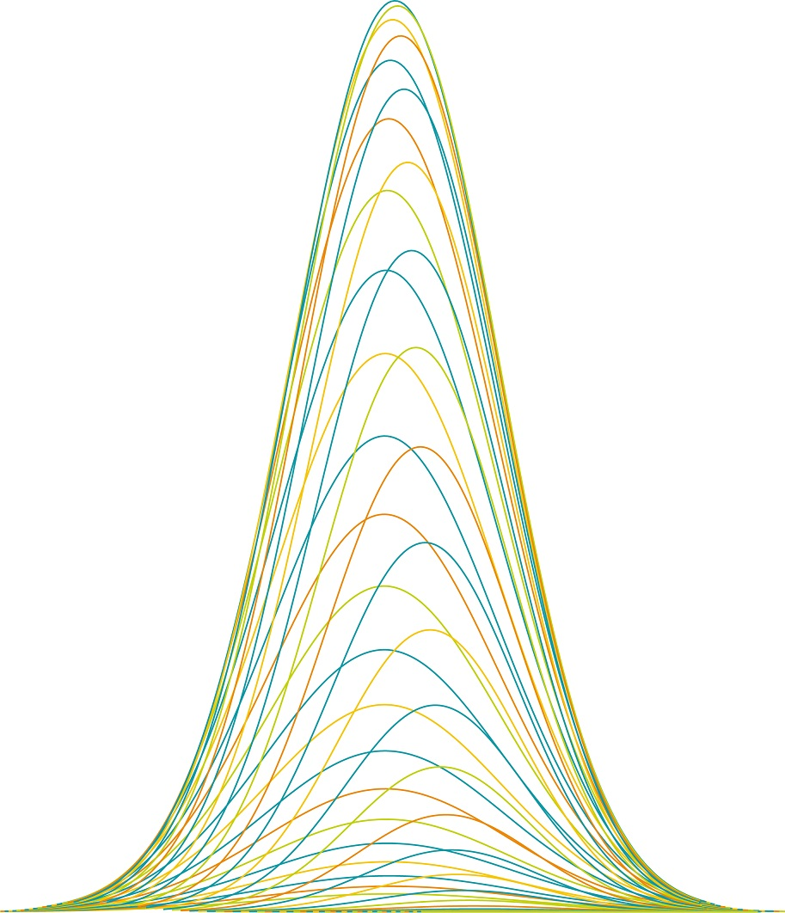
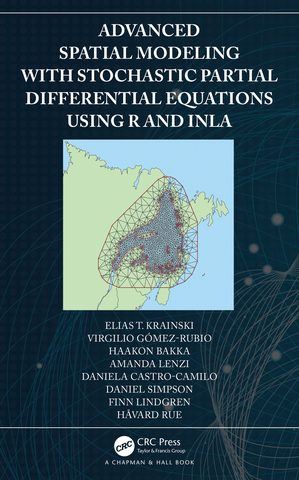
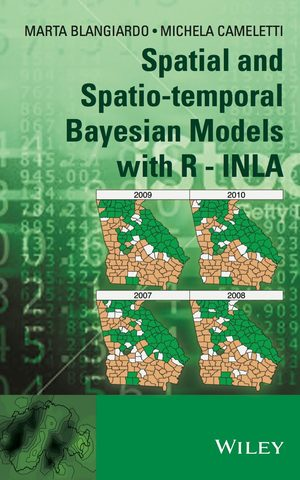
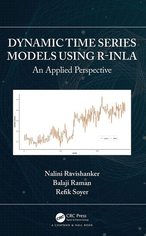
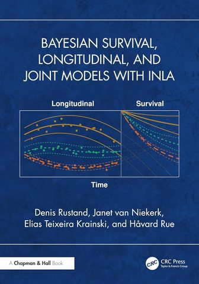
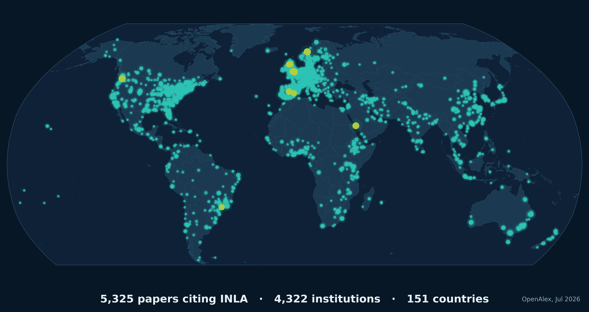

R-INLA is a powerful R package designed to perform fast, approximate Bayesian inference for Latent Gaussian Models. This platform is your gateway to cutting-edge methodological developments, tools, and resources centered around INLA.
Books on INLA, from the theory of Gaussian Markov random fields to spatial, survival and time series models.

Bayesian Inference with INLACRC Spatial and Spatio-temporal Bayesian Models with R-INLAWILEY
Bayesian Regression Modeling with INLACRC Geospatial Health DataCRC Dynamic Time Series Models using R‑INLACRC
Spatial Statistics for Data ScienceCRC Bayesian Survival, Longitudinal, and Joint Models with INLACRC
Explore the institutions and research groups citing INLA worldwide. Zoom and hover on the interactive map to see where the method is making an impact.

Open the interactive map →